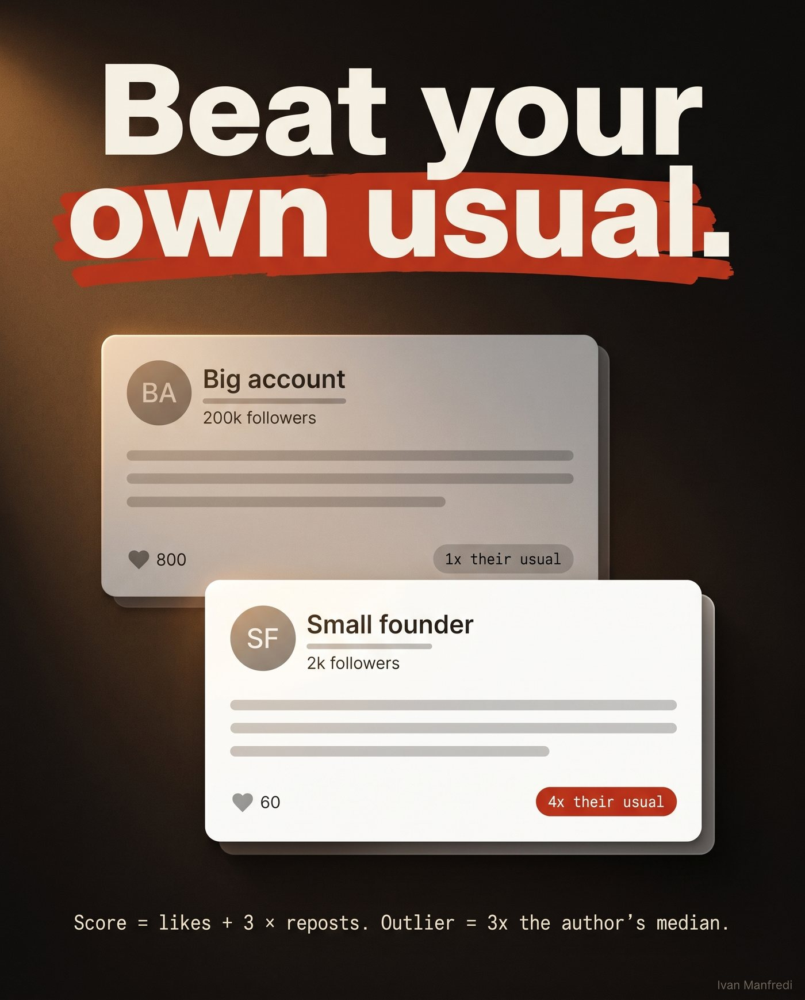
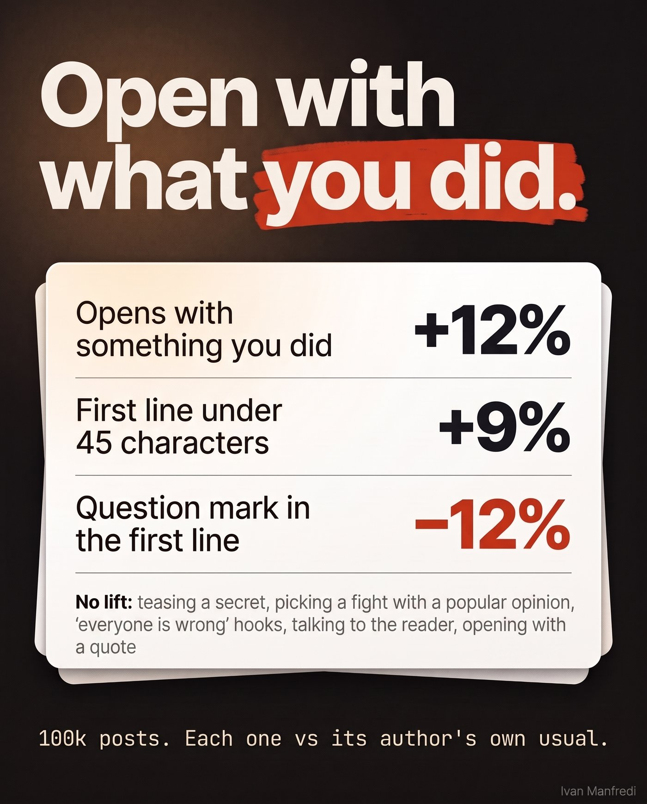
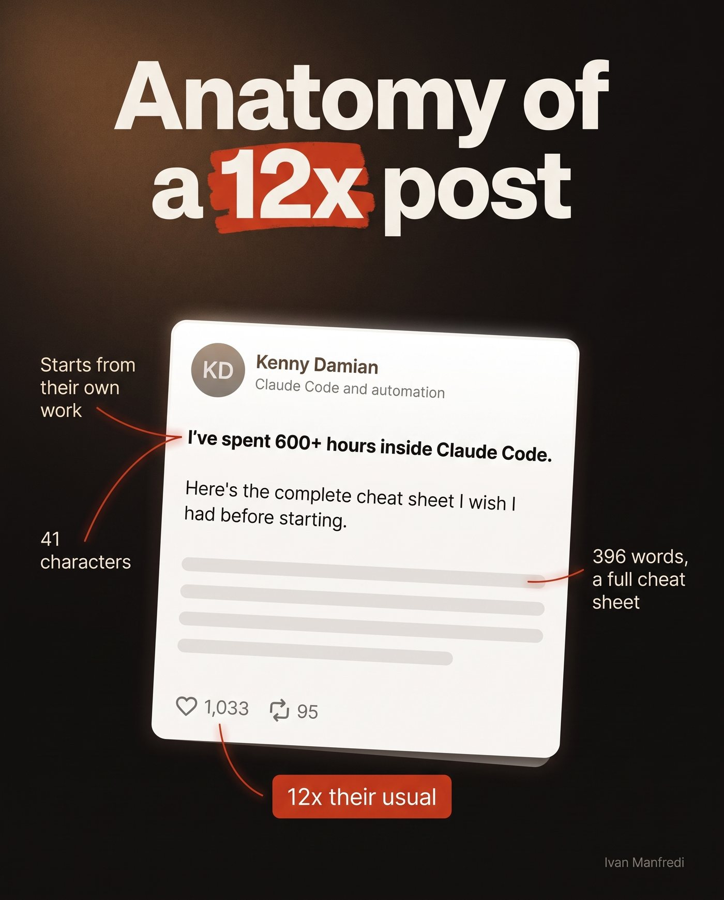
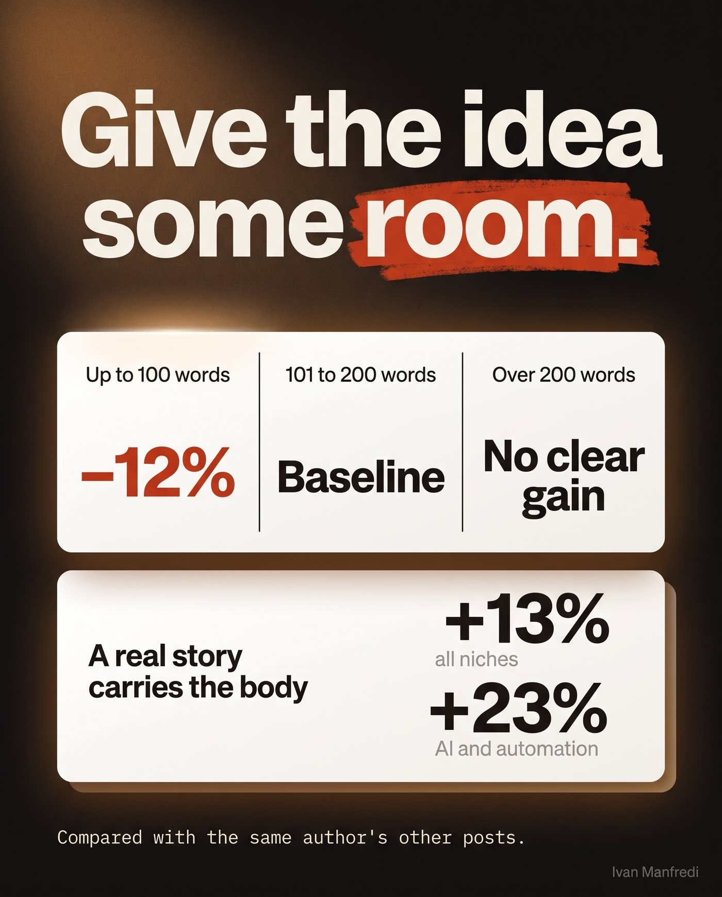
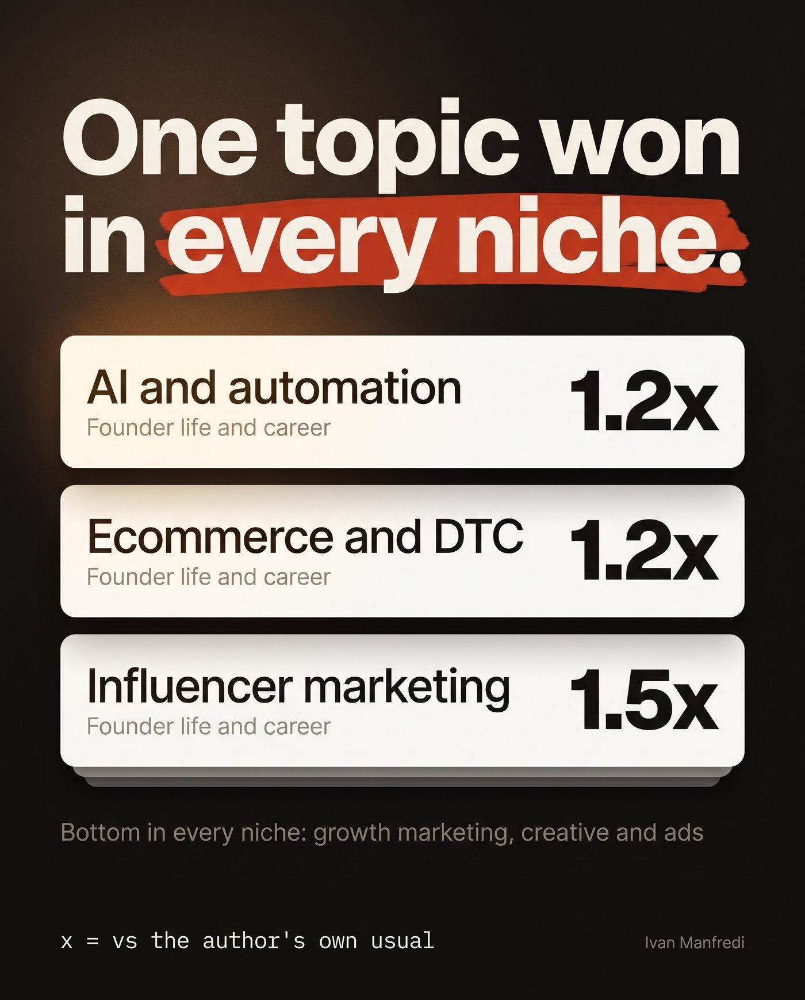
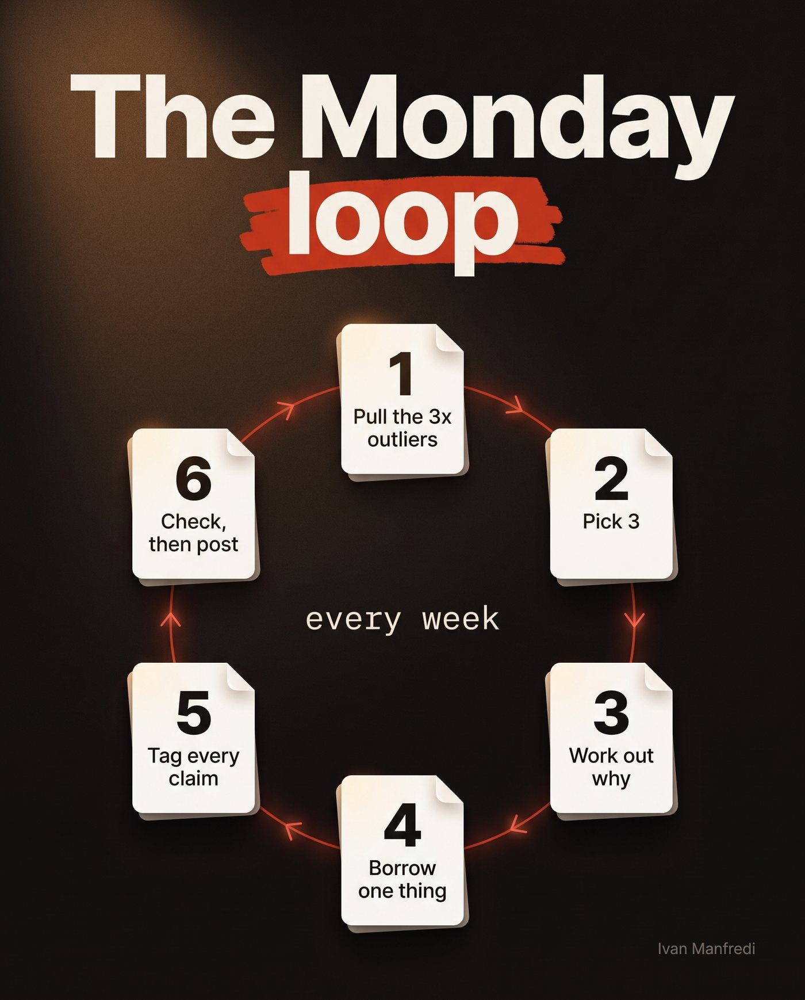
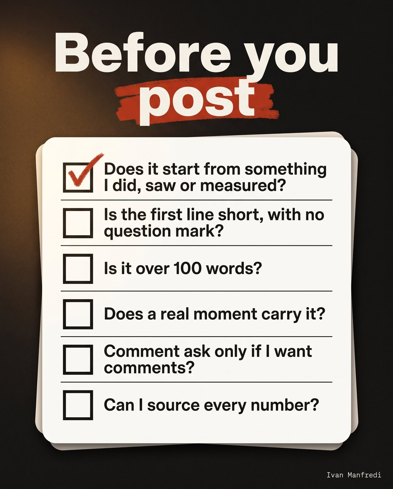

I built a content brain for my LinkedIn. Every week it reads posts across different niches, pulls the ones that did 3x or more of their author's usual engagement, and works out why they took off. Then it hands me 3 of them to borrow from.
Last week I pointed it at everything it had collected: 100k posts across 10 LinkedIn niches.
- AI, automation and agencies
- Ecommerce and DTC
- Influencer and creator marketing
- Marketing and creative agencies
- B2B SaaS founders and sales leaders
- Recruiting and staffing
- IT services and cybersecurity
- Fintech and finance
- Accounting, legal and consulting
- Coaches and personal brands
This is the full guide. What wins, what does nothing, real outliers for each pattern, and the weekly loop I run off it.
1. Measure a post against its own author
The easy move is copying whatever got the most likes in your feed. That mostly copies follower count.
Say a creator with 200k followers averages 800 likes. Another 800-like post from them tells you nothing about writing. So the brain only asks one question: did this post beat its own author?
usual = the author's median score
outlier = a post at 3× usual or more

Save this visual ↓A 2,000-follower founder whose usual is 15 and who hits 60 is an outlier. The 200k account doing its usual 800 is invisible. In the AI and automation niche alone, the brain has scored 7,175 posts. 475 of them hit 3x.
Find the outliers in your own niche (no tools needed)
- List 20 to 30 creators your buyers actually follow. Mix sizes on purpose.
- Open each profile and log their last 30 posts: likes and reposts.
- Work out each creator's usual (the median of likes + 3x reposts).
- Flag every post from the last 45 days at 3x their usual or higher.
That's your outlier pool. After the first pass you only add the new week's posts.
2. Openings
Every number in this guide compares a creator's posts with their own other posts, so account size is already out of the picture.

Save this visual ↓| Worked | |
| Opening from something the author did, saw or measured+15% in AI and automation. Held up again on the newest posts. | +11.7% |
| First line of 45 characters or less | +8.7% |
| Hook that leads with a surprising number or resultStrongest in influencer marketing (+16%). Weaker elsewhere. | +6.9% |
| Did nothing | |
| Teasing a secret in the first line | no lift |
| Picking a fight with a popular opinion | no lift |
| Tension or "everyone is wrong about X" hooks | no lift |
| Hooks that talk to the reader ("you") | no lift |
| Scene-setting hooks and how-to openers | no lift |
| Opening with a quote | no lift |
| Hurt | |
| A question mark in the first lineNegative in every niche we looked at. | −11.8% |
The "did nothing" list surprised me. Half the hook templates on LinkedIn are built on those, and across 100k posts they made no difference.
The rule I took from it: open with your own action, number or moment. Keep the first line short. Drop the question.
Real outliers

Save this visual ↓3. The body

Save this visual ↓| Body carried by a real story (a moment, then what happened next)+13% across all niches. | +23% AI niche |
| Lists of 3+ lines+13.5% in ecommerce, about +1% in AI and automation. | +6.8% |
| Going past 200 wordsNo clear advantage over 101 to 200. | no lift |
| One-line paragraphs everywhere | no lift |
| Body of 100 words or lessCompared with 101 to 200 words. | −12.3% |
So the very short post underperforms. Give the idea room to land, around 100 to 200 words, and tell what happened.
Lists depend on the audience. DTC readers reward them. In AI and automation they barely move anything, so I use one only when the content really is a list.
Real outliers
4. Endings
No closer type wins. Sign-offs, questions, hard stops, "DM me", morals, punchlines. None of them held up as a winner.
| Explicit ask for comments: commentsLikes and reposts didn't move. | +86% |
| Every closer type on likes and reposts | no winner |
So a comment ask gets you comments and not much else. Use it when comments are the goal, like a lead magnet. Skip it on everything else.
5. Topics
In a separate topic study, one topic beat the author's usual in every niche.

Save this visual ↓I still cap mine at 1 or 2 founder posts a week and keep the rest of the week varied.
Real outlier
6. The weekly loop
This is the part that actually changes what I post. Every Monday:
- Pull the outliers. Everything at 3x+ from the last 45 days.
- Pick 3. Each one for a different reason: one for the angle, one for the format, one for the argument.
- Work out why it took off. Topic, opening, body shape, length, and who engaged. If the people engaging are your buyers, it moves up the list.
- Borrow the angle or the structure. Swap in your own facts, numbers and stories.
- Tag every claim. Next to each line, note where it came from: your own record, an industry source, someone else's post, or your opinion. Anything with no source gets cut.
- Run the checklist below, then post.

Save this visual ↓Step 4 as a prompt
Paste the outlier post and your own notes into Claude or ChatGPT, then run this:
Here is a LinkedIn post that did 3x its author's usual engagement: [paste the outlier] Here are my own facts, numbers and stories for this week: [paste your notes] 1. In 2 sentences, say why this post likely beat its author's usual: the topic, the opening, the body shape, the length. 2. Pick ONE thing to borrow: the angle, the format, or the argument. 3. Write a new post with that one thing, using only my facts. Open with something I did, saw or measured. No question in the first line. 100 to 200 words. Carry it with a real moment if my notes have one. 4. Under the draft, list every claim and where it came from in my notes. Mark any claim with no source.
Delete every marked claim before you post.
7. The pre-post checklist

Save this visual ↓The full list, tick as you go. It resets for your next draft.
8. What this data can't tell you
I'd rather you trust the numbers, so here's where they stop.
- These are likes and reposts, which stand in for reach. They don't measure leads or booked calls.
- They're patterns across thousands of posts. A pattern that shows up a lot is a good default. It doesn't guarantee your next post.
- On the newest slice of posts, no single feature cleared the strictest statistical test on its own. The opening pattern came closest and held its direction everywhere.
- When I checked my own 240 posts, the opening pattern didn't show a gain. My account is small, so I keep these as defaults and keep testing.
So the brain keeps pulling new outliers every Monday, and I check them against these numbers.